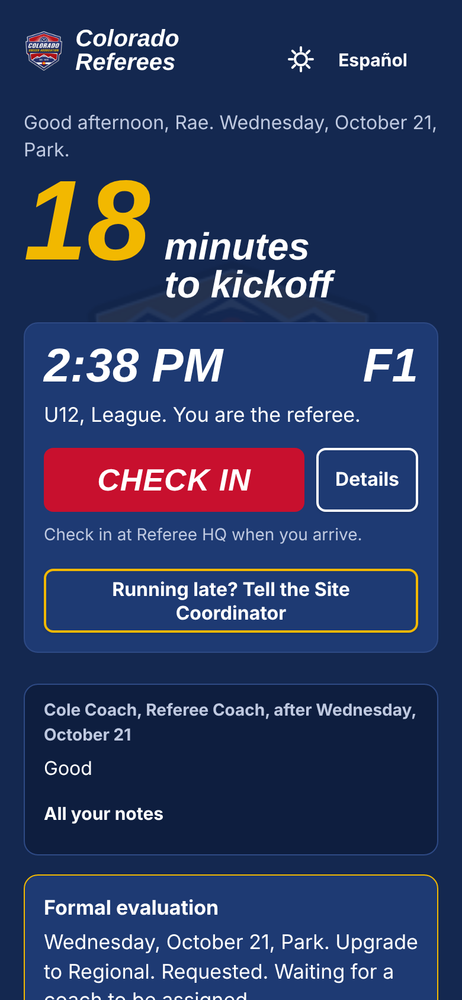

Every referee.
Every field.
Live.
JAReferee is the platform a referee program runs on. The referee gets their whole day on one screen. The venue gets a board that flags what needs a person. The program gets a coaching loop that lands the same night, and numbers it never had. These are real screens, live every weekend in Colorado.
 Built on real Saturdays with the Colorado Soccer Association referee program.
Built on real Saturdays with the Colorado Soccer Association referee program.